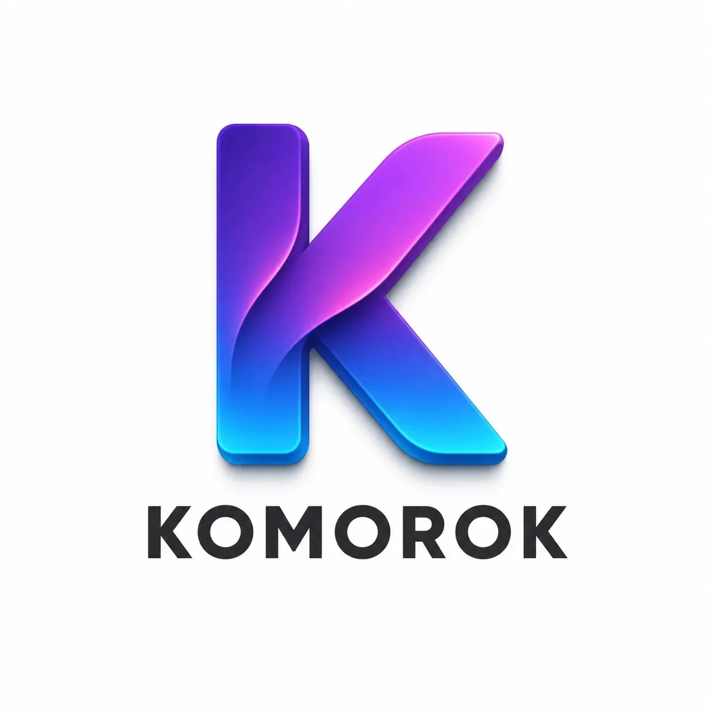

Приложение Komorok
Читайте статьи об истории Забайкалья с телефона
📥 Скачать для Android (.apk)Версия 1.3 · Около 5 МБ · Android 7.0 и новее
📖 Что это
Приложение Komorok — это обёртка сайта. Внутри — те же статьи, те же страницы, тот же дизайн. Никаких новых функций нет.
Зачем тогда приложение?
- Запускается одним кликом с рабочего стола — без адресной строки и вкладок
- Выглядит как обычное приложение, а не как браузер
- Можно закрепить на главном экране и в доке
- Никакой рекламы, никаких трекеров
- Работает быстро и стабильно — как обычный сайт
То есть приложение — это удобство, а не что-то принципиально новое. Все статьи и разделы как на сайте.
📋 Характеристики
📲 Как установить
- Скачайте файл .apk по кнопке выше.
- Откройте его в уведомлениях или в папке «Загрузки».
- Android спросит разрешение — включите «Установка из неизвестных источников» для браузера.
- Нажмите «Установить» и дождитесь окончания.
- Откройте приложение Komorok на рабочем столе.
Приложение распространяется напрямую, не через Google Play. Это нормально — Android всегда предупреждает при установке из APK-файла.
📸 Как выглядит
(Скриншоты можно будет добавить позже — сейчас показаны заглушки)


🍎 А для iPhone?
Пока приложение доступно только для Android. Версия для iOS в разработке — следите за новостями в нашем канале в Max.
Пока что на iPhone и iPad можно пользоваться сайтом через браузер — все статьи доступны в разделе Komorium.
❓ Вопросы и проблемы
Если приложение не устанавливается, не запускается или вы нашли ошибку — напишите нам в канал Max. Постараемся помочь.